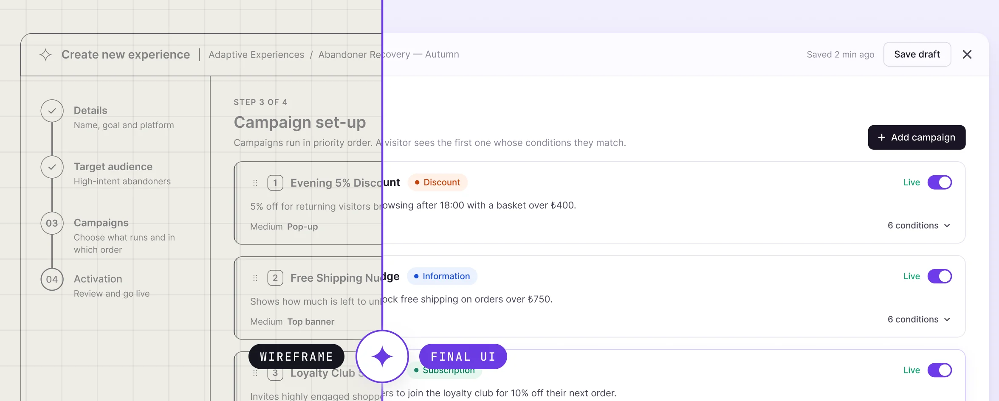
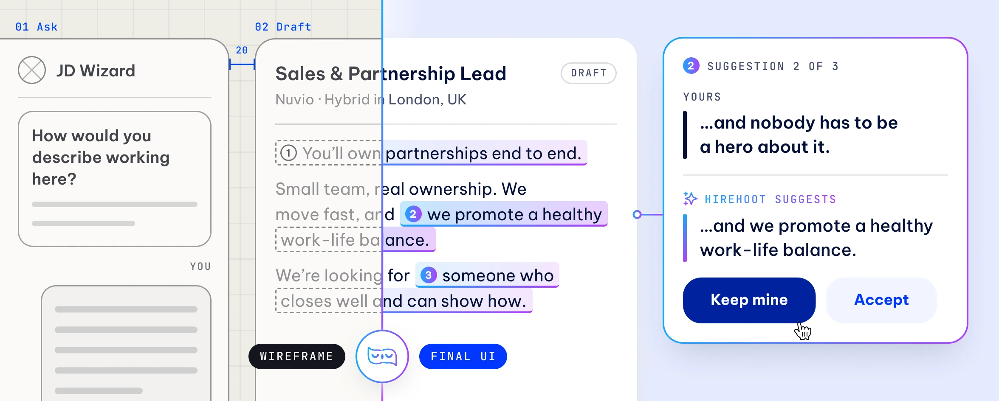
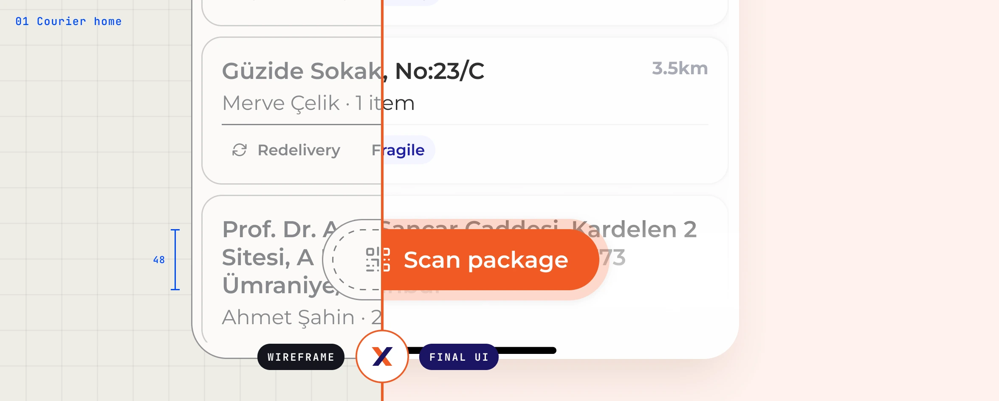

YOU SEE IT
THE SAME DAY
Ten minutes after the meeting there's something on screen. I'd rather argue with a bad sketch than a good paragraph — it collapses weeks of debate into one afternoon.
Pen → Figma → decision
An agency had delivered a generic CRM-style dashboard for a predictive AI engine. It couldn't be built, and nobody used it — the internal team set everything up in the admin panel and read results in Excel. I rebuilt it from the architecture up, shipped a scoped V1, and the whole company started working in the product.

A recruitment startup needed a designed foundation before they could hire a designer of their own. In two months I built the design system, the brand's behaviour in the product, and the main flows as real screens — including an AI wizard that writes job descriptions with the hiring manager rather than for them. Then I handed the file over.

A B2B platform connecting retailers and suppliers. Logistics, stock, ramp reservations, agreements and reporting all had to live in one interface, for four kinds of user who each see a different slice of the same data. I did the architecture, the system, the UI, the brand and the landing page — in weekly sync with the front end, never ahead of it.

Couriers were running 20–100 packages a day out of Excel. The brief wasn't really an app, it was ergonomics: one thumb, bad signal, direct sunlight, a moving vehicle. Every delivery flow completes in three taps or fewer, the contrast was audited and fixed in both modes, and it keeps working in a dead zone.
A generic template rebuilt as a luxury storefront — each scent its own chapter, with a photography standard and motion that does a job. Live in two markets.
Case study ↗ Designed + built soloNot a case study. A two-player code-breaking game I designed, then built myself. Live in a browser, no install, no sign-up.
Play it ↗Not a process diagram. This is the loop I run on every team I've joined.
Ten minutes after the meeting there's something on screen. I'd rather argue with a bad sketch than a good paragraph — it collapses weeks of debate into one afternoon.
Pen → Figma → decisionYour engineers and your investors hear the same thing. Because I translate between founders, engineering, marketing and the board without dropping intent, unbuildable concepts come back as scoped, shippable specs.
The room agrees, then we buildI sit with the devs until the build matches the file. States, edge cases, empty screens, the 3am error toast. Design isn't done when it's pretty — it's done when it's live.
In the PR review, not just the handoffDashboards, mobile apps, design systems, AI interfaces. From messy discovery to a component library the team maintains.
Two years at Founder Institute watching founders pitch. It changed how I structure any argument — narrative first, slides second.
Logo systems, type, colour, photography direction, motion — carried from the first mark through to guidelines that survive contact with a real team.
Plus enough HTML/CSS to prototype the thing myself instead of describing it — this site is one of them.
Send me the brief and I'll tell you whether I'm the right person — usually within a day. I'm most interested in products where AI capability is arriving faster than the interface can explain it. Working out how a product should speak about what it just learned to do is the problem I want next.